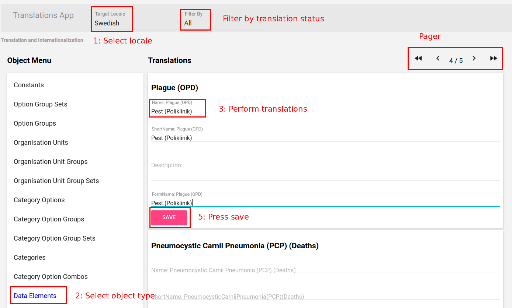

In addition to translation of the user interface, DHIS2 also supports the localization of the metadata content in the database. It is possible to translate individual objects through the maintenance app, but in order to better support a standard translation workflow, a specialized app has been developed for this purpose. The DHIS2 translation app can be used to translate all metadata (data elements, categories, organisation units, etc) into any locale which is present in the database.
To get started, simply choose the "Translations" app from the top level menu.
|  |
From the top of the app, choose the locale you wish to translate into.
Next, choose the type of obejct you wish to translate from the left-hand pane.
Choose the specific object you wish to translate, and translate each of the properties (Name, Short name, Description, etc).
Press "Save" when you are done translating the object to save your changes.
Take note that you can filter the translations based on their status